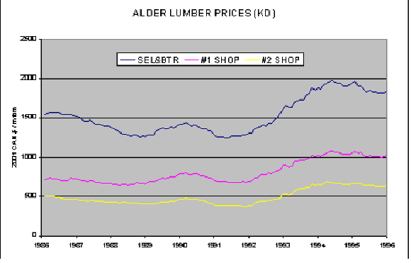
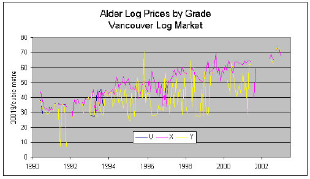

In this Topic Hide
FAN$IER should only be applied to hardwoods with informed caution. FAN$IER's primary focus is softwood silviculture and the associated softwood log and lumber markets. Users should be aware that:
FAN$IER's cost and price defaults for hardwood species are currently based on white spruce defaults due to the scarcity of economic data when the current defaults were established several years ago. Refer to Red Alder Economics below for more information.
No default lumber values are available since TASS and TIPSY only produce log yields for hardwoods.
Red alder was the first hardwood species incorporated in TASS and TIPSY. The information below was originally developed for FAN$IER's predecessor, the TIPSY Economist.
Because the majority of the timber harvested in B.C. is softwood destined for the structural lumber market, FAN$IER focuses on the characteristics of this market. Since alder is not generally milled for structural lumber markets, there are potential limitations in using FAN$IER to assess the economics of various silviculture treatments for alder. Consult TIPSY HELP for yield-related limitations related to alder.
There are two types of limitations of red alder economics in FAN$IER.
The harvesting and sawmilling cost defaults in FAN$IER are all based on softwoods. If these costs are significantly different for alder than for softwoods, relying on the defaults may not be ideal. If you have appropriate estimates for these costs, you should override the defaults.
Alder lumber prices are also difficult to obtain in a systematic manner. Prior to 1996, the Hardwood Review Weekly (Charlotte, North Carolina) consolidated alder lumber prices by grade for select, #1 shop and #2 shop (random length/random width) on an annual basis. After 1996 they discontinued collecting this information. They did not compile prices for lower grades, #3 shop, frame and pallet stock. The lower grades can make up over half the lumber volume produced from a stand. For reference, the following chart provides alder lumber prices for the period 1985 to 1995 (Hardwood Review Weekly). Prices have been converted to 2001 Canadian dollars by adjusting for inflation and the Canada/US exchange rate.

FIGURE 039, Alder lumber prices for the period 1985 to 1995 (Hardwood Review Weekly).
Alder log prices are available from the Vancouver Log Market. The volumes traded are small (averaged less than 70 000 m3/yr during the five years prior to 2002) and for grades X & Y only (sawlog and pulplog). Grade X probably includes X and better. There is one major and several smaller alder sawmills in the province, therefore the competition for alder sawlogs on the open market within the province is limited. The following chart provides log prices from the Vancouver Log Market from 1990 to 2002.

FIGURE 040. Alder log prices from the Vancouver Log Market from 1990 to 2002.
Over the past five years grade Y pulplogs averaged about $45/m3 and grade X sawlogs averaged about $60/m3 (2001$Can). Unfortunately the prices from the Vancouver Log Market do not distinguish between various sawlog grades that might be present in the market.
Alder log prices are available from Washington and Oregon. Recorded sawlog prices are based on sawlog diameter. In April 2002 alder log prices in Washington ranged from:
- $650/mbf for 12"+ diameter
- $600/mbf for 10" – 11"
- $525/mbf for 8" – 9", and
- $250 to $400/mbf for 6" – 7" diameter logs.
These translate, in Canadian dollars, to about $C170/m3, $130/m3, $100/ m3, and $45/m3 to $70/m3, respectively. Pulp logs sold for $20 to $45/ton. The exchange rate used is 1.5$Can /1$US. The conversion from Scribner to m3, varies by diameter and is from Snellgrove et al (1984)1, which is less than ideal. Even under the best circumstances, the conversion factor can vary by log length and taper as well as diameter. Pulp log prices range from $25 to 50/m3. The conversion is based on a green alder density of 46.8 lb/ft3.
These prices appear to be higher than those on the Vancouver Log Market. There could be several reasons for this. First, with restricted trading between the markets, prices may differ because the markets themselves are distinct, each having different supply demand structures. Also, there may be a large volume of small logs on the Vancouver Log Market. The alder growing sites in the U.S. are considered better than those in B.C. and are more actively managed. This should produce higher quality logs in the U.S., which command higher prices. Don't forget that the purpose of FAN$IER is to assess the economics of managed stands, thus, in this respect the logs sold in the U.S. may better reflect managed stands than the logs currently sold in B.C. In spite of these caveats, the prices from the US at least give an indication of the relative prices between sawlogs of varying quality (diameter) whereas prices from the Vancouver Log Market do not. Price differentials are critical if one is to carry out serious analyses of differing management regimes for alder stands.
The sawmill simulator (SAWSIM) used to generate lumber yields for TASS and TIPSY cannot predict the grades of alder lumber produced from the logs in the stand. This was not a problem for softwoods as the literature shows lumber grades produced from second growth stands are for the most part #2 & Better. However, in the case of alder the lumber grades produced from the stand will vary with the management regime chosen for the stand.
Plank, et al (1990)2 estimated lumber grade recovery by diameter of mill length logs. The relationship appears to hold moderately well for Select and #1 shop but less so for the lower grades. This is probably due to the fact that lumber grade is strongly influenced by log position in the tree bole (Ahrens, 1992)3. Butt logs produce higher quality lumber than logs positioned higher in the bole. Without controlling for log position, small logs from the upper bole are pooled with similar sized logs from the butt even though these logs likely produce lumber with very different grade distributions. From woods-length logs, Ahrens shows that the butt log produces 21 percent more select and 15 percent more #1 shop grade lumber than logs of the same diameter located higher in the bole. Under these circumstances, using diameter alone as an indicator of lumber quality will bias an economic analysis in favour of stands with the greatest DBH.
This argument can be carried over to collecting log pricing information based on diameter alone. This is particularly true for the logs with smaller diameters, as these can come from butt logs of trees with small DBH or from logs in the upper bole of larger trees. Small diameter butt logs should command higher prices than similar diameter logs located higher in the bole of larger trees because they produce more select and #1 shop grade lumber. If prices from these groups are pooled together in the price data there may be a bias against stands with lower average DBHs in an economic analysis.
TASS and TIPSY red alder log tables are based on 2.5 m sawlog length. Any log that doesn't meet the criteria is put in the pulp category.
At this point, there are no default BC-based prices available. FAN$IER uses prices and costs for white spruce instead (the conifer with the highest default prices). This applies to other hardwoods as well (e.g., aspen and birch).
Consequently, for alder, FAN$IER economic defaults should be considered tentative. All criteria are subject to change as better information is obtained.
1Snellgrove, T. A., D. F. Thomas and B. S. Bryant. 1984. User’s Guide for Cubic Measurement. USDA Forest Service, Pacific Northwest Forest and Range Experiment Station, Portland Ore.
2Plank, M. E., T. A. Snellgrove and S. Willits, 1990. Product values dispel "weed species" myth of red alder. USDA Forest Service, Pacific Northwest Research Station, 333 SW 1st Avenue, P.O. Box 3890, Portland, OR 97208. Forest Products Journal 40(2):23-28.
3Ahrens, G. R., 1992. Effects of stand characteristics and tree growth rate on lumber recover of red alder. Hardwood Silviculture Cooperative, Department of Forest Science, Oregon State University.